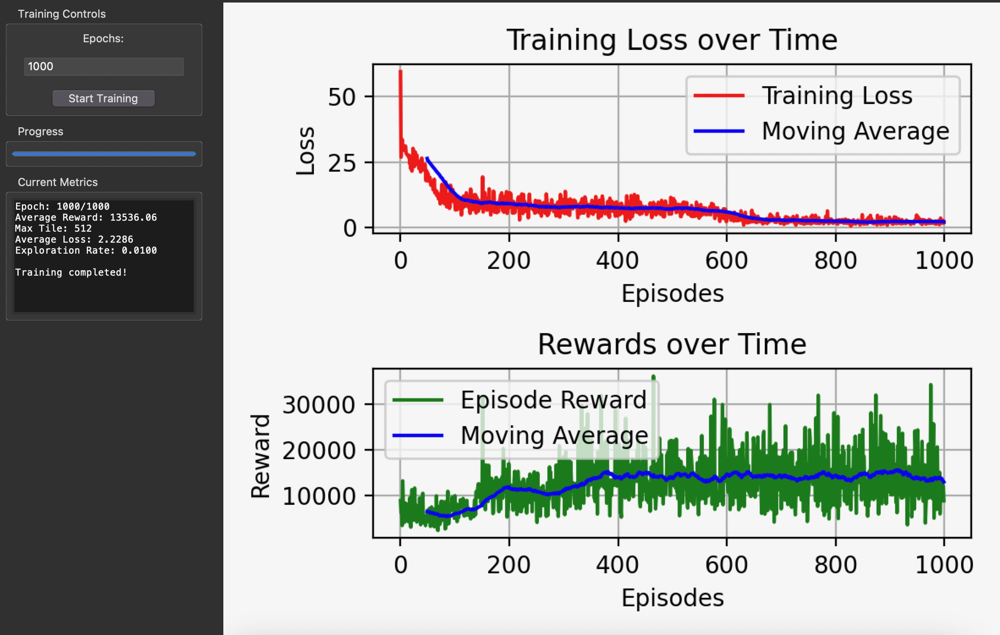

2048 Q-Learning
Deep Reinforcement Learning Agent for the 2048 Puzzle

Overview
2048 is a deceptively hard puzzle game: the state space is enormous, rewards are sparse and delayed, and the optimal strategy requires thinking many moves ahead. This project trains a deep reinforcement learning agent to play 2048 using Double Q-Learning — an improvement over vanilla DQN that reduces overestimation of action values.
The agent learns purely from game experience, with no hard-coded heuristics. It observes the board state, chooses a direction (up/down/left/right), receives a reward proportional to the score gained, and updates its policy using temporal difference learning.
Architecture
The Q-network is a fully connected neural network built in TensorFlow. The board state (a 4×4 grid of tile values) is flattened and log-normalized before being passed through two hidden layers with ReLU activations, outputting Q-values for each of the four possible actions.
Key techniques used:
- Double Q-Learning: Decouples action selection from value estimation to reduce overoptimistic Q-value updates.
- Epsilon-greedy exploration: Starts with high exploration (ε=1.0) and anneals to near-zero over training.
- Experience replay: A circular buffer of (state, action, reward, next state) tuples sampled in mini-batches for training stability.
- Target network: A frozen copy of the Q-network updated periodically to stabilize training.
Results
After training across thousands of episodes, the agent reliably reaches the 512-tile and 1024-tile milestones. A full write-up of the methodology, hyperparameters, and training curves is available in the research paper linked below.